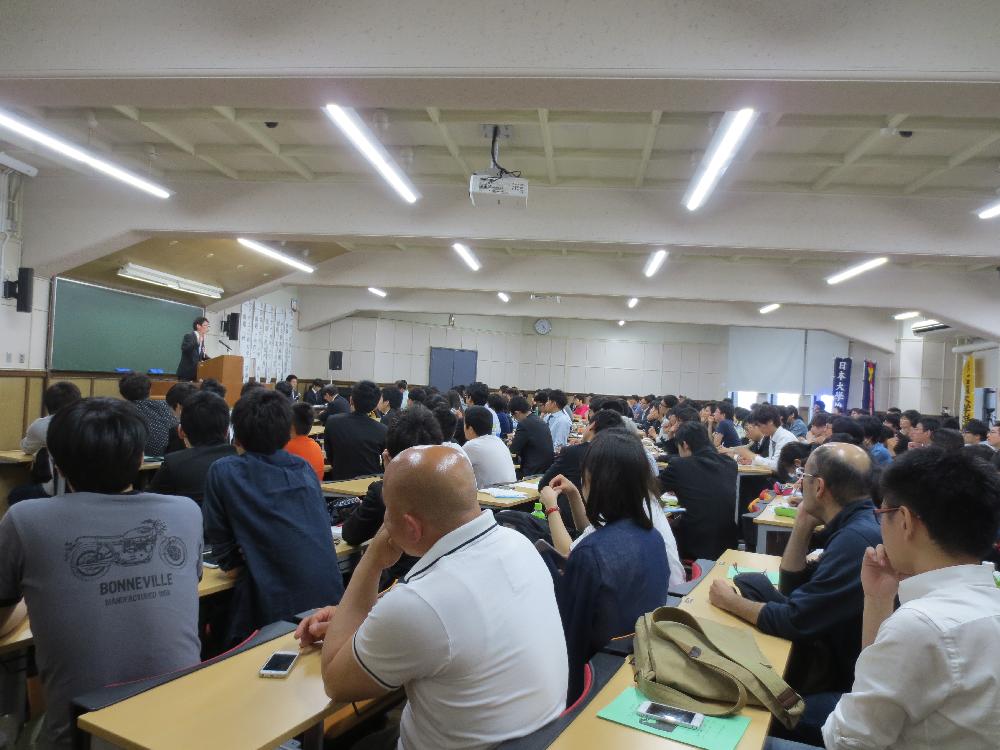
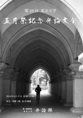

五月祭弁論大会

五月祭弁論大会（東京大学五月祭記念弁論大会）は、東京大学本郷キャンパスで毎年５月に開催される五月祭において弁論部が主催する弁論大会です。
数ある弁論大会の中でも、五月祭弁論大会は五月祭というイベントの中で行われていることもあり、はじめて弁論をご覧になる方が数多くいらっしゃいます。また、新歓直後の５月に開かれるということもあり、各大学がとりわけ力を入れた弁論を披露します。
バンドや屋台から一歩離れたアカデミックな企画にも参加してみたいという方、政治や社会問題に関心のある方など、少しでも興味を持たれた方は是非五月祭に足を運ぶついでに五月祭弁論大会をのぞいてみてください。必ずや他の聴衆と一緒に弁士に熱いまなざしを注ぐご自身に気付かれることでしょう。
第15回（2019年度）東京大学五月祭記念弁論大会

下記のとおり開催いたします。
五月祭にお越しの際は是非ご来場ください。
日時：2019年5月18日（土）9時45分開場 10時15分開会式
場所：東京大学本郷キャンパス 法文一号館（東）法22教室